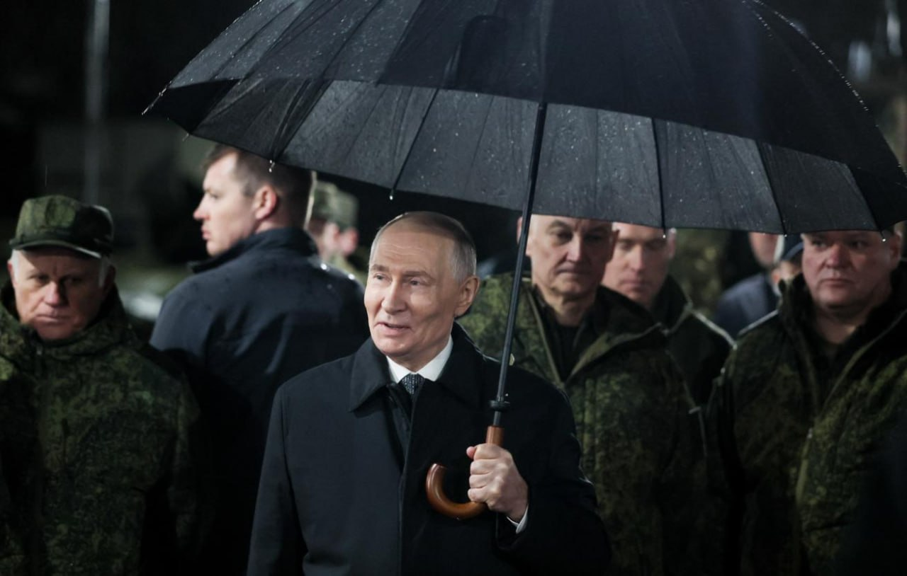

Топор Live
@toporlive
Топор Live
@toporlive
Учения Центр-2026 проводятся в соответствии с планом подготовки ВС РФ в них задействовано свыше 47 тыс. военнослужащих Путин.

⚡️Учения «Центр-2026» проводятся в соответствии с планом подготовки ВС РФ, в них задействовано свыше 47 тыс. военнослужащих, — Путин.
Президент РФ посетил полигон Чебаркульский в Челябинской области, где наблюдал за учениями «Центр-2026».
Главное из заявлений Путина:
Песков в свою очередь отметил, что учение «Центр-2026» плановое и не связано с вызовами у российских границ.
👉 Топор Live. Подписаться
Президент РФ посетил полигон Чебаркульский в Челябинской области, где наблюдал за учениями «Центр-2026».
Главное из заявлений Путина:
— Главная цель учений «Центр-2026» — совершенствование навыков в управлении войсками при отражении внешней агрессии;
— Задачи в ходе учений «Центр-2026» решаются с учетом опыта СВО;
— Путин уверен, что результаты учений «Центр-2026» и «Взаимодействие-2026» повысят эффективность реагирования на внешние угрозы;
— Ту-22М3 нанесли массированный бомбовый удар по критическим объектам условного противника;
— Также дальние бомбардировщики нанесли поражение отряду кораблей условного противника в Каспийском море;
— Российский лазерный комплекс «Заря» уничтожил цели на дальностях до 6 км.
Песков в свою очередь отметил, что учение «Центр-2026» плановое и не связано с вызовами у российских границ.
👉 Топор Live. Подписаться